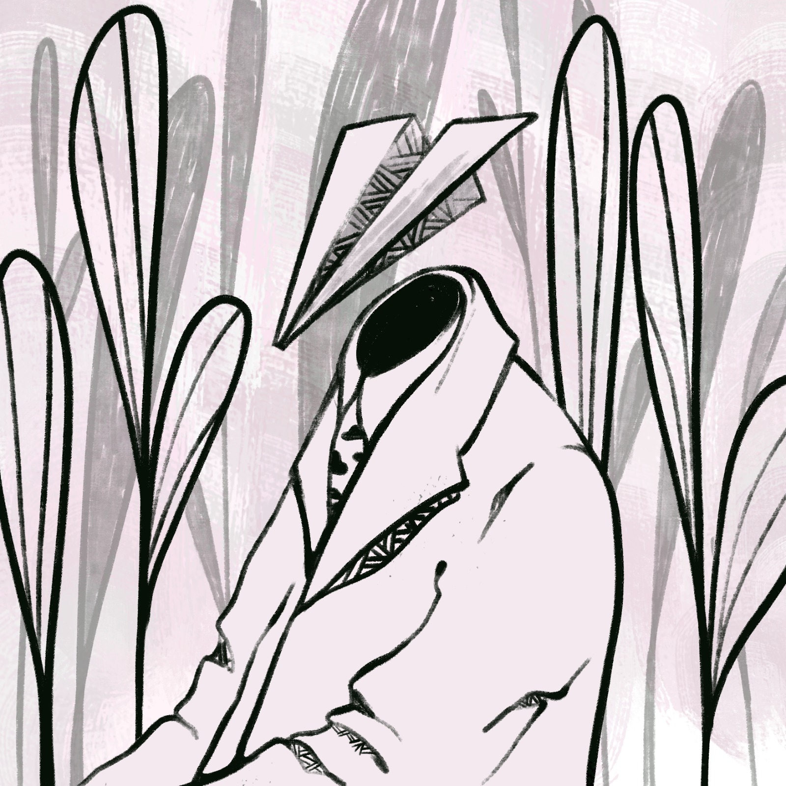
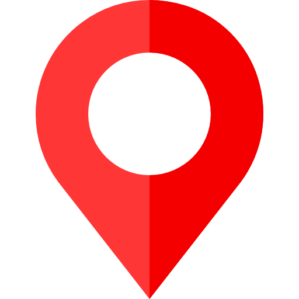

Imagem Gatilho • Calibração
Mantenha esta imagem visível na tela e aponte a câmera do smartphone na página NFT. A animação 2D se fixará exatamente sobre a ilustração.

Realidade Aumentada. Obras 2D integradas à arquitetura da cidade diretamente pelo navegador.
Mantenha esta imagem visível na tela e aponte a câmera do smartphone na página NFT. A animação 2D se fixará exatamente sobre a ilustração.

O pin é ancorado via GPS e bússola em coordenadas reais no espaço físico, com indicador direcional suave no rodapé para apontar a câmera.

Para testar sem impressão física, mantenha o padrão abaixo visível e aponte a câmera do smartphone.